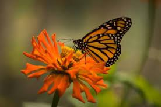
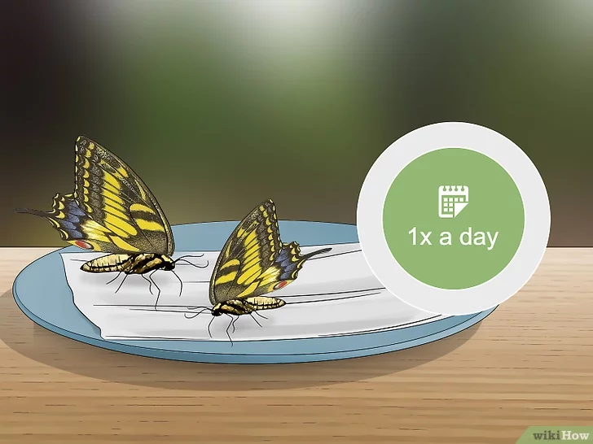

Alimentação
Do Que Se Alimantam?
Alimentam-se de folhas de urtiga, pequenas lagartas, néctar de flores e partes de frutas em decomposição.

Como Alimenta-las
Alimente-as ao menos uma vez ao dia. Coloque-as cuidadosamente no papel toalha com alimento pelo menos uma vez por dia. Se alguma estiver teimando demais para comer, dê a ela algumas chances. As outras borboletas podem querer comer novamente também, mas elas costumam demorar um pouco para ficar com fome.
